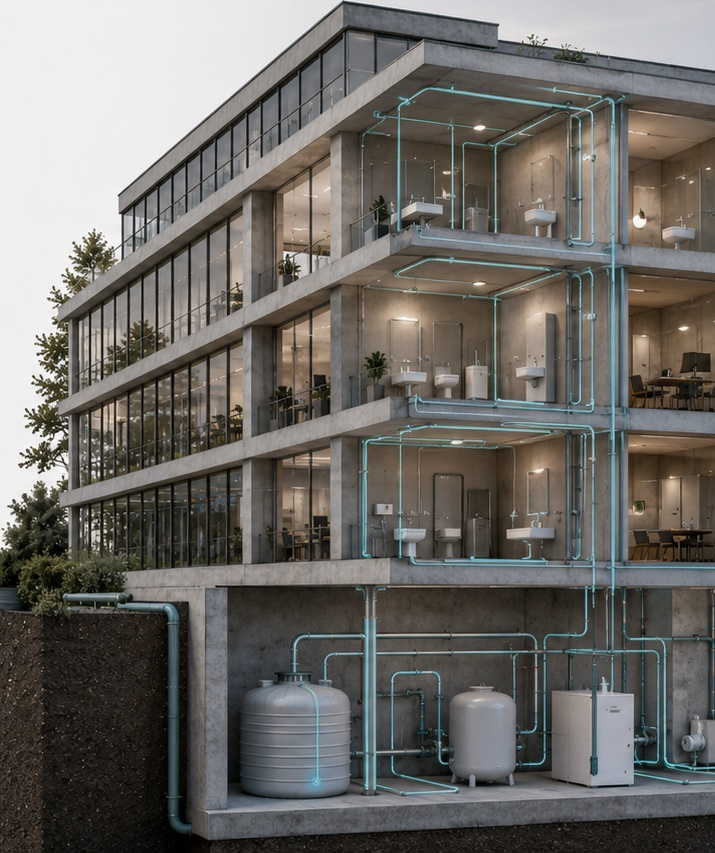

GEAK, Minergie, SNBS: welches Label wofür
Labels werden oft verwechselt, weil sie alle irgendwie mit Energie zu tun haben. Sie beantworten aber drei völlig verschiedene Fragen.

Der GEAK sagt, wie gut ein Gebäude heute ist. Minergie sagt, wie gut ein Gebäude gebaut oder saniert wird. Der SNBS sagt, wie nachhaltig ein Bauwerk insgesamt ist — Energie ist dort nur einer von vielen Aspekten. Wer diese drei Fragen auseinanderhält, kommt schneller zu einer Entscheidung.
GEAK: die Bestandsaufnahme
Der Gebäudeenergieausweis der Kantone bewertet die Gebäudehülle und die Gesamtenergieeffizienz auf einer Skala von A bis G. Er beschreibt den Ist-Zustand und verlangt keinerlei Massnahme. Für Verkauf, Vermietung und die eigene Standortbestimmung ist er das schnellste verfügbare Instrument.
Der GEAK Plus ergänzt den Ausweis um einen Beratungsbericht mit mehreren Sanierungsvarianten, deren energetischer Wirkung und groben Kosten. Genau diese Variante verlangen mehrere Kantone als Voraussetzung für Fördergelder — und deshalb steht sie oft ganz am Anfang eines Projekts, noch vor der eigentlichen Planung.
Der GEAK Plus ist selten ein Selbstzweck. Er ist meist die Eintrittskarte zur Förderung.
Wichtig zu wissen: Der GEAK bewertet mit standardisierten Annahmen zu Nutzung und Klima, nicht mit Ihrem tatsächlichen Verbrauch. Ein Gebäude mit schlechter Klasse und sparsamen Nutzern kann real weniger verbrauchen als eines mit besserer Klasse und intensiver Nutzung. Der GEAK vergleicht Gebäude, nicht Haushalte.
Minergie: der Baustandard
Minergie stellt Anforderungen an das fertige Gebäude: Energiekennzahl, Luftdichtheit der Hülle, kontrollierte Lüftung, thermischer Komfort im Sommer. Es ist ein Standard für Neubau und Sanierung, kein Bewertungsinstrument für den Bestand.
- Minergie — der Grundstandard mit Anforderungen an Energie und Komfort.
- Minergie-P — deutlich strengerer Energiebedarf, entsprechend höhere Anforderungen an die Hülle.
- Minergie-A — die Eigenversorgung über das Jahr steht im Mittelpunkt.
- Zusatz ECO — ergänzt die Themen Gesundheit und Bauökologie.
Der Aufwand liegt weniger in der Technik als in der Disziplin. Luftdichtheit muss gebaut und gemessen werden, nicht nur ausgeschrieben. Die Lüftung muss geplant statt nachgerüstet werden. Der sommerliche Wärmeschutz braucht einen Nachweis, der die Verschattung einschliesst — und Verschattung wird in Kostenrunden gern gestrichen.
Wer diese Punkte früh einplant, hat kaum bauliche Mehrkosten. Wer sie nachträglich erfüllen muss, zahlt deutlich. Das ist der wesentliche Unterschied zwischen einem Projekt, das Minergie von Anfang an anstrebt, und einem, das es nachträglich «auch noch» erreichen will.
SNBS: das ganze Bauwerk
Der Standard Nachhaltiges Bauen Schweiz betrachtet Gesellschaft, Wirtschaft und Umwelt gemeinsam — von der Standortqualität über die Nutzungsflexibilität und die Lebenszykluskosten bis zum Rückbau. Energie ist ein Kriterium unter vielen.
Er ist entsprechend umfassender und aufwendiger und lohnt sich vor allem bei grösseren Vorhaben und bei öffentlichen Bauherrschaften, die Nachhaltigkeit gegenüber Dritten belegen müssen. Für ein einzelnes Mehrfamilienhaus ist der Aufwand meist unverhältnismässig.
Was das in der Praxis kostet
Der GEAK ist die günstigste Massnahme und amortisiert sich häufig allein über die Fördergelder, zu denen er den Zugang öffnet. Er ist damit fast immer eine sinnvolle erste Investition, auch wenn noch nicht feststeht, ob und wann saniert wird.
Minergie kostet Planungsaufwand, Zertifizierungsgebühren und Messungen. Bei früher Berücksichtigung bleiben die baulichen Mehrkosten überschaubar; der grösste Posten ist oft die kontrollierte Lüftung, die in vielen Fällen ohnehin sinnvoll wäre.
Der SNBS verlangt zusätzlich Nachweise über den gesamten Lebenszyklus und damit eine eigene Projektorganisation. Diese Kosten sind planbar, aber sie sind nicht klein — sie gehören von Beginn an ins Budget und nicht als Nachtrag.
Eine einfache Entscheidungshilfe
- Sie wollen wissen, wo Ihr Gebäude steht, und Fördergelder holen: GEAK Plus.
- Sie bauen oder sanieren und wollen einen belegbaren Qualitätsstandard: Minergie.
- Sie müssen Nachhaltigkeit gegenüber Dritten ausweisen: SNBS.
- Sie wollen ausschliesslich tiefere Betriebskosten: kein Label, sondern eine Betriebsoptimierung.
Der letzte Punkt ist ernst gemeint. Ein Label verbessert kein Gebäude — es beschreibt es und verpflichtet zu Anforderungen. Die Einsparung kommt aus den Massnahmen und aus dem Betrieb, nicht aus dem Zertifikat. Wer nur die Kosten senken will, investiert das Geld für die Zertifizierung besser in eine saubere Einregulierung.
Was Labels für die Finanzierung bedeuten
Über den energetischen Nutzen hinaus haben Labels eine wirtschaftliche Seite. Mehrere Banken bieten für zertifizierte Bauten günstigere Hypothekarkonditionen an, und institutionelle Investoren verlangen bei Ankäufen zunehmend einen Nachweis der energetischen Qualität.
Für Eigentümer, die mittelfristig verkaufen oder refinanzieren wollen, ist das ein Argument, das über die Betriebskosten hinausgeht. Es lohnt sich, die Konditionen vor der Entscheidung abzuklären — die Unterschiede sind je nach Anbieter erheblich.
Zertifizierung ist ein Prozess, kein Dokument
Bei Minergie und SNBS begleitet die Zertifizierung das Projekt von der Eingabe bis zur Bestätigung nach Fertigstellung. Zwischenprüfungen, Messungen und Nachweise fallen zu definierten Zeitpunkten an. Wer das erst in der Ausführung bemerkt, hat ein Terminproblem.
- Provisorische Zertifizierung auf Basis der Projektunterlagen.
- Nachweise während der Ausführung, etwa die Luftdichtheitsmessung.
- Definitive Zertifizierung nach Fertigstellung.
Die Luftdichtheitsmessung ist der kritische Termin. Sie muss stattfinden, solange Nachbesserungen noch möglich sind — also bevor die Hülle verkleidet ist. Wer sie ans Ende schiebt, kann ein negatives Ergebnis nur noch mit grossem Aufwand korrigieren.
Zusammengefasst
- GEAK beschreibt den Bestand und öffnet die Tür zur Förderung.
- Minergie ist ein Baustandard mit Anforderungen an Energie und Komfort.
- SNBS bewertet Nachhaltigkeit über den ganzen Lebenszyklus.
- Früh eingeplant kosten Labels wenig, nachträglich viel.
- Ein Label ersetzt keine Betriebsoptimierung.
Dieser Beitrag ordnet ein und ersetzt keine Planung am konkreten Objekt. Normen, Förderbedingungen und kantonale Vorgaben ändern sich — prüfen Sie den aktuellen Stand bei der zuständigen Stelle.
Weiterlesen

Integrale Planung: warum Einzeloptimierung scheitert
Jedes Gewerk für sich optimiert ergibt kein optimales Gebäude. Wo die Schnittstellen liegen und wann sie geklärt sein müssen.

Messkonzept: ohne Zähler keine Steuerung
Welche Messpunkte man wirklich braucht, welche Kennzahlen etwas aussagen und warum ein Zähler zu wenig schlimmer ist als zehn zu viel.